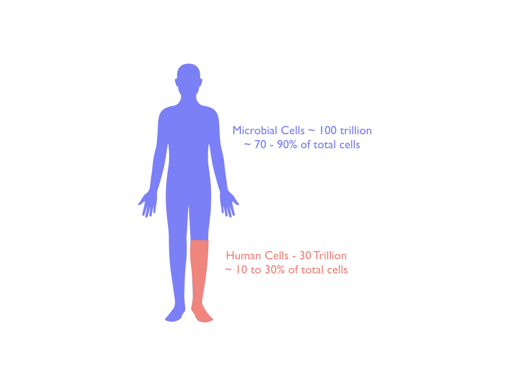
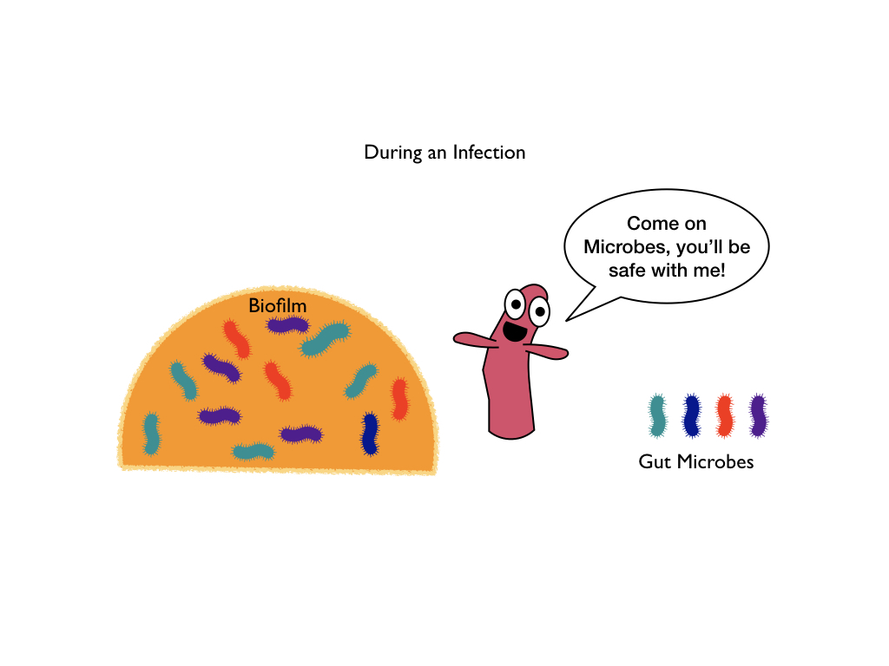
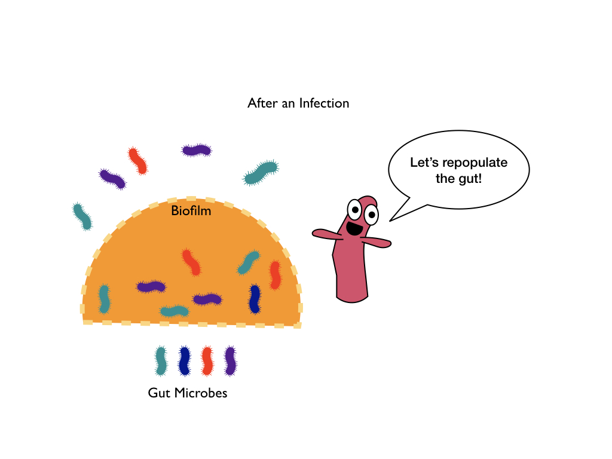

We now know that the human microbiome is essential for human health3. In fact, bacteria and fungal cells outnumber our cells at least 3 to 14.

The appendix has two functions that aid our immune system to keep us healthy: First, it serves as a reservoir of good bacteria in case of a gut infection. Second, it contains some important immune cells to help us fight off infections.
It was only recently, in 2007, when researchers determined that the appendix plays host to gut bacteria by forming and protecting biofilms1. A biofilm is made when a group of microbes, like bacteria, stick together and also stick to a surface using mucus (similar to slime). Biofilms are like safe houses for bacteria, protecting them from outside elements that might harm them, and allowing bacteria to form stable communities1. Biofilms can cause infection (especially if the biofilm grows on contact lens or artificial limbs), however, in the appendix, biofilms protect the good bacteria that populate our gut1. While almost all of our gut has some amount of biofilm to prevent pathogenic bacteria from crossing our intestinal barrier, the appendix has the most biofilm1. The appendix is located toward the end of our colon but it avoids fecal matter (lucky appendix) and is narrower than other parts of the gut, which helps to keep the appendix safe from infection1.
In the course of a gut infection, diarrhea cleans out most of our bacteria, both good and infection-causing, leaving our gut depleted of its protective biofilm layer. The appendix then sheds some bacteria from its biofilms to repopulate the rest of the gut with good bacteria2. This release and relocation of beneficial gut bacteria after infection by our appendix helps our immune system keep us healthy and maintain the mutualistic relationship between our cells and our gut bacteria.


Besides functioning as a “safe house” for our gut bacteria, the appendix also contains some immune cells that can react quickly to fight off infections1. Your appendix has several types of immune cells including B cells, T cells, macrophages, natural killer T cells, and cells that make antimicrobial peptides2.
B cells are a type of immune cell that make antibodies against pathogens to protect you5. Antibodies are a special type of protein that bind to specific molecules that the pathogen either wears or makes5.
T cells are a different type of immune cell that can protect you from infection in two basic ways. One way is that some T cells directly kill infected cells. The second way is that T cells activate B cells to encourage B cells to make more antibodies5.
Natural killer T cells are a rare, special kind of T cell that can only recognize the glycolipid (sugar-fat) or lipid (fat) part of microbes unlike normal T cells which recognize the peptide (protein) part of microbes5. They can react much more quickly than normal T cells by releasing a ton of cytokines5. Your appendix has a large concentration of this rare population of natural killer T cells to better protect you from infection from something you ate or from a pathogenic bacteria lurking in your gut2.
Macrophages make up the sentries of our immune system. They can eat microbes and destroy infected cells5. After eating the microbe, they take a piece of it and show the microbe piece to T and B cells to rally them to respond to the threat of infection5.
If macrophages are the sentries of the immune system army, then cytokines are the drummer boys because they are the key messengers that our immune system uses as alerts and as messengers for the rest of the army6. Antimicrobial peptides are the foot soldiers of your immune system and they kill microbes to fight infections and help keep you healthy7. Your appendix protects you from infection and keeps you healthy by hosting both beneficial gut bacteria in biofilms and also fast acting immune cells to ward off infection.
Now that we have established that your appendix does serve a purpose, let’s talk about appendicitis or the reason we’ve discovered that you can live without one. Appendicitis occurs when your appendix becomes inflamed from a blockage (trapped bacteria) that causes infection1,8. The blockages that result in bacterial infections of the appendix or appendicitis are usually due to food or feces getting stuck in the narrow appendix8. The blockage can also happen if the appendix swells from infection8. About 1 in 15 people in the United States experience appendicitis8. The usual solution to appendicitis is to simply remove the appendix8. The removal of the appendix hasn’t shown any long term detrimental effects on health or longevity in developed nations since easy access to clean water and adequate sewage removal help prevent most diarrheal infections1. In a developed nation, you aren’t at a high risk for getting a parasitic or other infections compared to your risk in a developing nation, because the threat of diarrheal diseases have been greatly reduced by government enforced hygienic practices (waste disposal, clean food and water regulations)1. Therefore, you don’t need a backup microbiome to swoop in and repopulate your gut frequently and quickly because your microbiome is not threatened in the first place.
In regions such as the Middle East and South America where industrialization and westernized hygienic and medical practices are on the rise, so are cases of appendicitis8. The risk of appendicitis increases as the society becomes more industrialized8. In developing nations where diarrheal diseases are a big risk to quality of life, such as some African nations, the risk of appendicitis is much, much lower since the appendix is in greater demand for its ability to repopulate the gut with good bacteria and fight off infections1. Also, in children under five years of age, the risk of appendicitis is much lower, even in developed nations, since that age group is at the highest risk of dying from diarrheal illnesses1.
Thus, our appendix has a purpose! It helps our immune system defend our bodies from infection (especially diarrheal disease) but we have found that we can survive without it if our risk of getting infected is greatly reduced by proper hygienic practices.
Laurin, M., Everett, M. Lou & Parker, W. The Cecal Appendix: One More Immune Component With a Function Disturbed By Post-Industrial Culture. Anat. Rec. Adv. Integr. Anat. Evol. Biol. 294, 567–579 (2011).
Kooij, I. A., Sahami, S., Meijer, S. L., Buskens, C. J. & Te Velde, A. A. The immunology of the vermiform appendix: a review of the literature. Clin. Exp. Immunol. 186, 1–9 (2016).
Cho, I. & Blaser, M. J. The human microbiome: at the interface of health and disease. Nat. Rev. Genet. 13, 260–70 (2012).
Blaser, M. J. Meet Your Microbiome. (2018). at https://www.amnh.org/explore/science-topics/health-and-our-microbiome/meet-your-microbiome
Murphy, Kenneth, Janeway, Charles A. Jr., Travers, Paul, and Walport, M. Janeway’s Immunobiology, 8th Edition. (Garland Science, 2012).
Harrison, C. Sepsis: Calming the cytokine storm. Nat. Rev. Drug Discov. 9, 360–361 (2010).
McGill, K. Antimicrobial Peptides: Your Body’s Homeland Security | The Dish on Science. TheDishOnScience (2017). at https://thedishonscience.stanford.edu/posts/amp-immune-foot-soldiers/
Ferris, M. et al. The Global Incidence of Appendicitis. Ann. Surg. 266, 237–241 (2017).